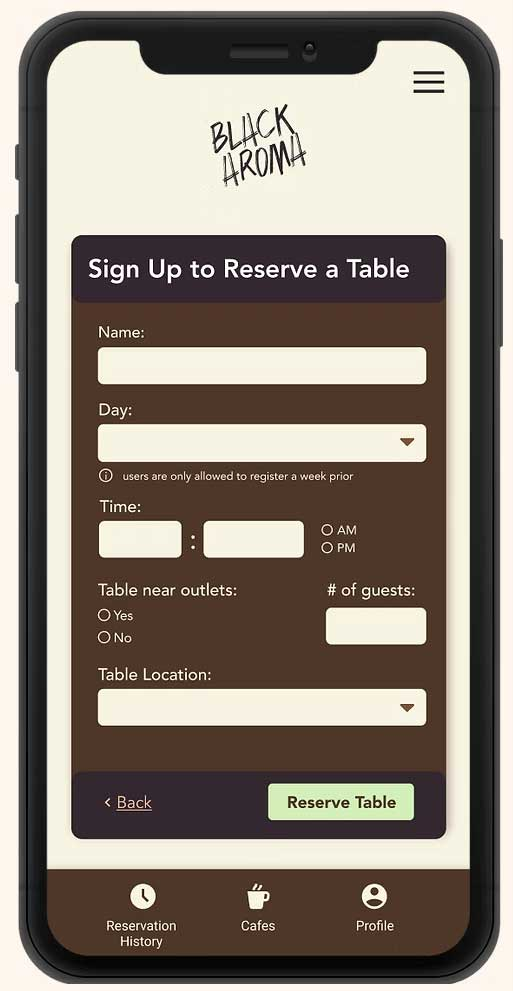

Finalizing the user flow and prototype
Final user flow
Below shows the final user flow I landed on after making all the iterations based on the low-fidelity, high-fidelity usability study insights, and implementing the design system.
Users first browse through a selection of cafes based on their location and preferences, then selects a cafe where they want to reserve a table. For now, let's pretend the user wants to reserve a table at Nirvana Soul.
After, the user looks through the cafe profile to determine if this cafe fits their needs. To do this, the user selects the 'See Table & Outlet Availability' button to see which tables and outlets are available.
After, the user browses the available tables and outlets and decides to sit on the main floor.
The user goes back to the cafe profile and selects 'Reserve Table' to move to the next step.

The user then fills out a form with their desired preferences. This involves indicating when and where the user wants a reservation, if they want outlets, and the number of guests they plan to bring.
Before completing the table reservation process, the user is given a chance to review their information. After the user is happy with the information they provided, they press 'Reserve Table' to complete the table reservation process.
Voilà, the user has reserved a table at Nirvana Soul!